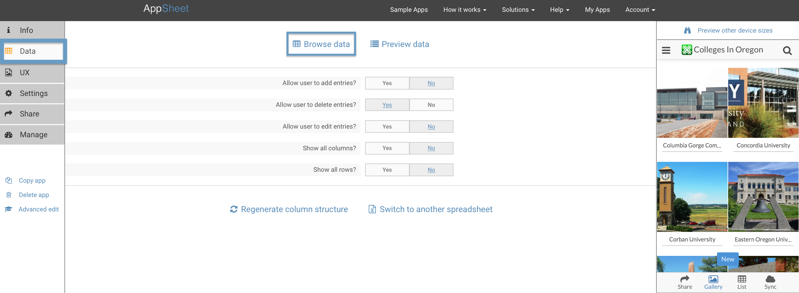
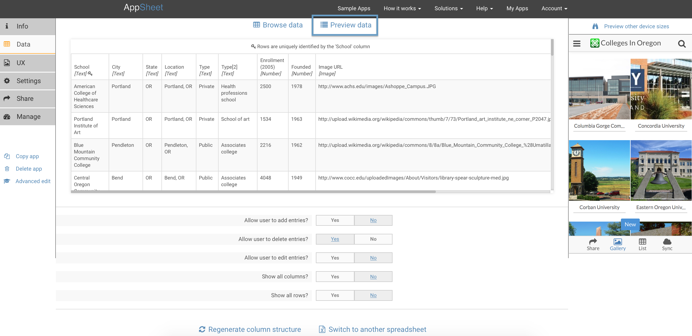
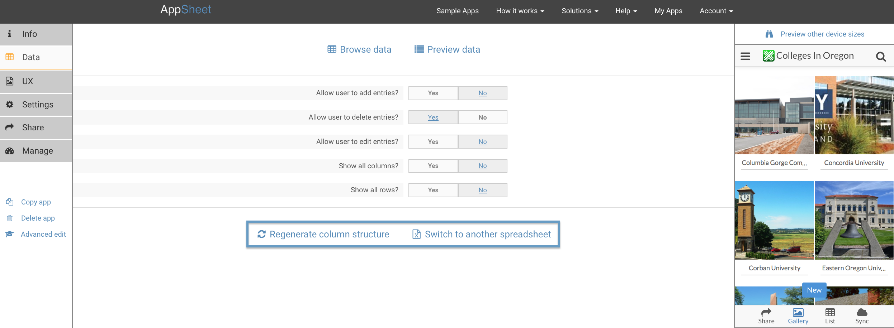

Using the app editor and a spreadsheet – AppSheet
AppSheet extracts tabular column structure from your spreadsheet, and works best when the spreadsheet has regular tabular data-- the first row has column headers and the remaining rows are data. Extraneous data, drawings, charts, etc. may cause problems. Here's how you understand and control the process.
In the Data section of the Basic Editor, you see a few simple controls. The Browse Data link opens the spreadsheet in a separate browser tab. If you are using Google Sheets, this allows you to edit the Google sheet in one tab while you see the effects on your app in the AppSheet tab.

If you click on the Preview Data link, you see the first few rows of the spreadsheet conforming to the column structure that AppSheet has extracted. Each column has a header name and a data type. Also, one of the columns has been identified as the unique key. This choice is very important-- the unique key helps AppSheet synchronize changes made in the app back to the spreadsheet.

Every time you refresh the Basic Editor page, AppSheet checks your app and shows error, warning, and info messages at the top of the page. Wherever possible, AppSheet tries to automatically fix problems found and inform you.
When you change the structure of the spreadsheet, AppSheet notices the difference between the spreadsheet and what it expects. So it gives you a warning: 'More columns than expected' or 'Less columns than expected'. If you are editing the app on our web page, it will try to automatically pick up the new structure. If the extracted column structure is not what you expect, or there are errors/warnings you want to act on, you would typically make changes to your spreadsheet (as described below) and then click Regenerate Column Structure.

You can also choose to switch to another spreadsheet. There are two reasons to do this-- perhaps you started with an example to play with and now you want to switch to a 'real' spreadsheet with a very different structure, or perhaps you want to switch to a different spreadsheet that has the identical structure (eg: switching from test data to production data). In both cases, AppSheet detects the new column structure and reacts appropriately to it.